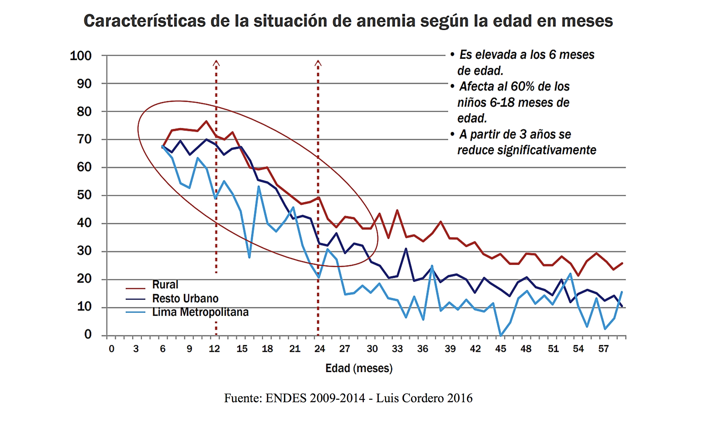
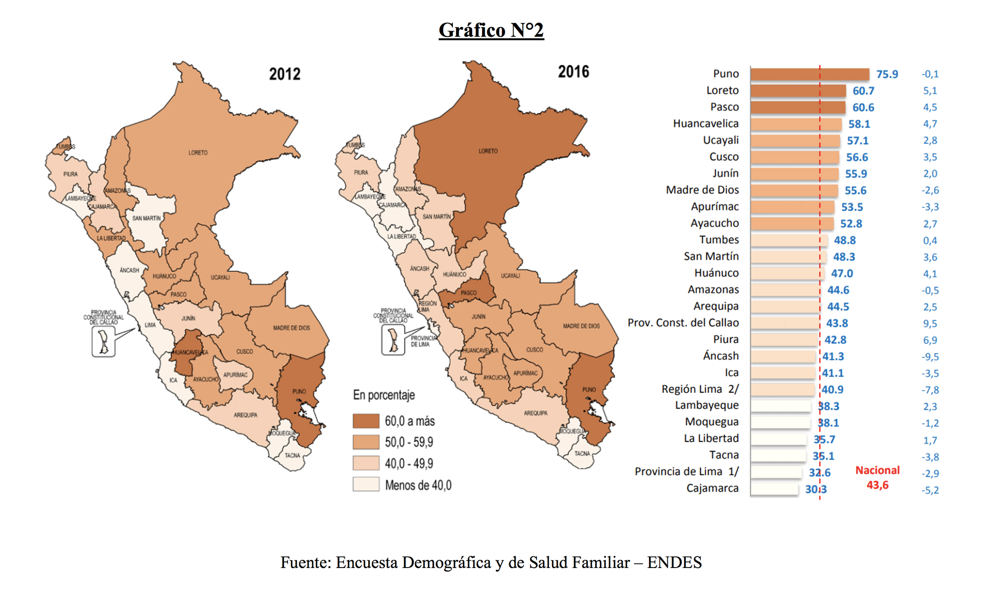
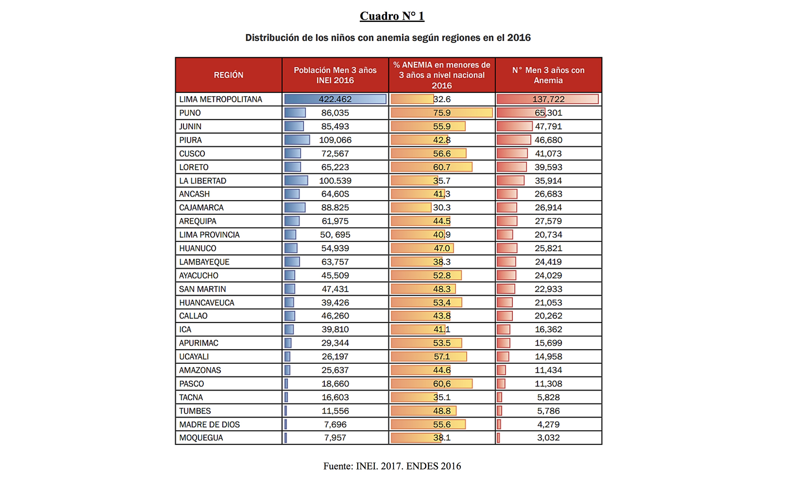
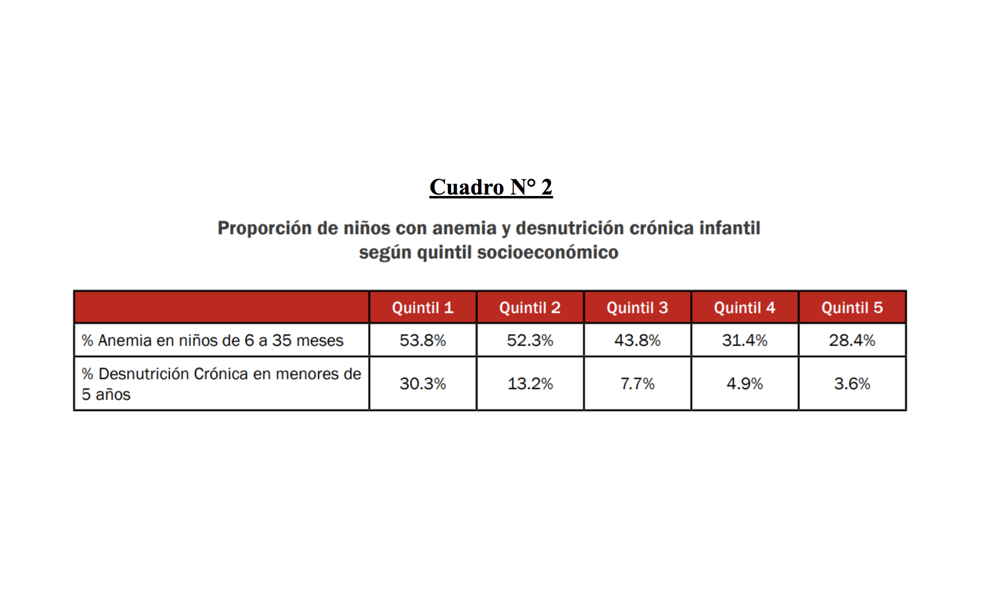
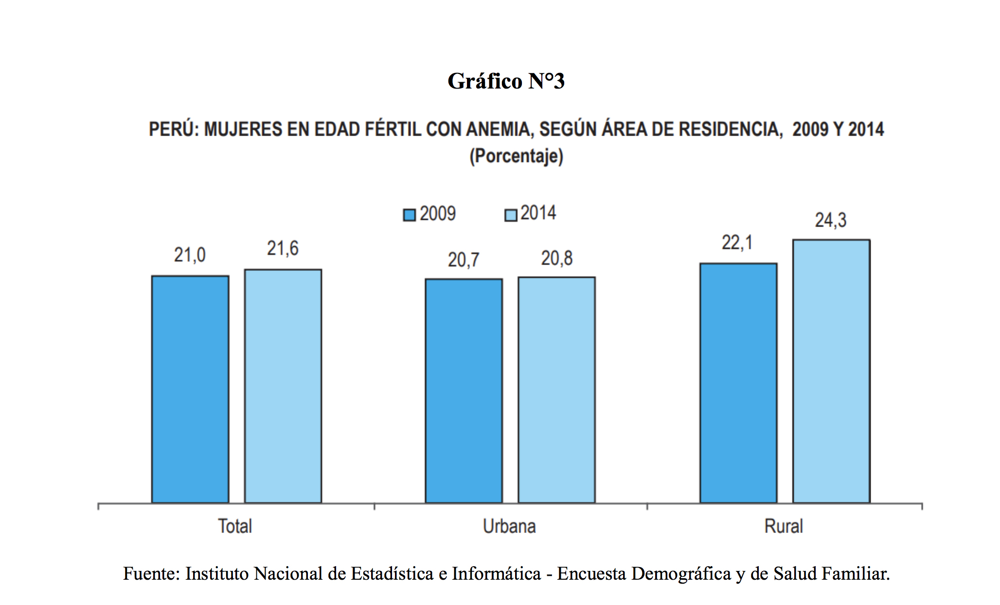
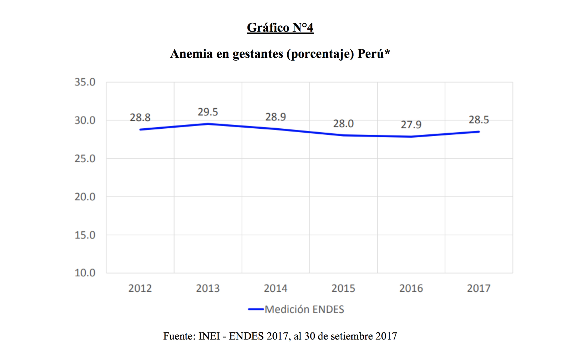

Medición de efectos
Entre los grupos vulnerables se encuentran las mujeres gestantes y los niños menores de tres años de edad. Esto es explicable debido a sus mayores necesidades nutricionales, ya que durante estos periodos hay un acelerado crecimiento del feto, de ciertos órganos de la madre y del bebé (Colegio Médico del Perú, 2018)
En el Perú, la anemia constituye un problema de salud pública grave, dada la elevada prevalencia de 43,6% entre los niños de 6 a 35 meses, al 2016, y casi 6 de cada 10 niños, entre los 6 y 12 meses, se encuentran con anemia (59,3%). (Garcia, 2017)
Según el reporte de la Encuesta Demográfica y de Salud Familiar (ENDES), las regiones que presentan una mayor proporción de anemia son Puno (75.9%), Loreto (61.5%), Ucayali (59,1%), Pasco (58%) y Madre de Dios (57.3%). Estos resultados demostraron que el Plan Nacional de reducir el porcentaje de peruanos no está bien llevado ya que el objetivo de reducir el porcentaje no se cumplió sino más bien se ha mantenido(Endes, 2016).
Los departamentos con mayor número de niños con anemia son Puno, Junín, Piura, Cusco y Loreto, cada uno con más de 35 mil niños afectados por este mal. Si bien la prevalencia en Lima Metropolitana está por debajo del promedio nacional (32.6% en el 2016), en números absolutos representa, junto con Callao, aproximadamente 160 mil niños y niñas de entre 6 y 35 meses y encabezan la lista de ámbitos con mayor cantidad de niños anémicos en el país. Son 16 departamentos, entre los cuales Puno (76%), Madre de Dios (58.2%), Apurímac (56.8%), Pasco (56.1%), Loreto (55.6%), los que encabezan la lista con niveles de anemia por encima del promedio nacional. (Endes, 2016)
La anemia es un problema generalizado, tanto en las áreas urbana y rural, y también atraviesa todos los estratos socioeconómicos. Afecta a un 53.8% de niños de 6 a 35 meses de hogares de quintiles socioeconómicos más bajos y también a un 28.4% del quintil superior (Endes, 2016).
Como se dijo un grupo vulnerable, además de los niños menores a 5 años, son las mujeres. El 21,6% de las mujeres de 15 a 49 años de edad padecía de algún tipo de anemia, proporción mayor en 0,6 puntos porcentuales al valor reportado en el año 2009 (21,0%). Según los resultados del año 2014, el 18,2% de mujeres en edad fértil tenía anemia leve, el 3,0% presentaba anemia moderada y la anemia severa afectó al 0,4% de las mujeres en edad fértil. Según área de residencia, el porcentaje de mujeres con anemia fue mayor en el área rural (24,3%) que en el área urbana (20,8%) (INEI, 2015). (Grafico N°3)
Las mujeres gestantes son un grupo vulnerable a la anemia ya que con el feto se requiere de una dieta con aumento de hierro, ya que se necesita tanto para el feto como para la madre gestante. Como se puede ver en el (Grafico N°4) el porcentaje de anemia en madres gestantes es alarmante ya que al ser mayor del 20% es un problema de salud publica y a pesar de haberse puesto a prueba diferentes planes de prevención contra la anemia la tendencia ha ido aumentando (Ipinza, 2017).
